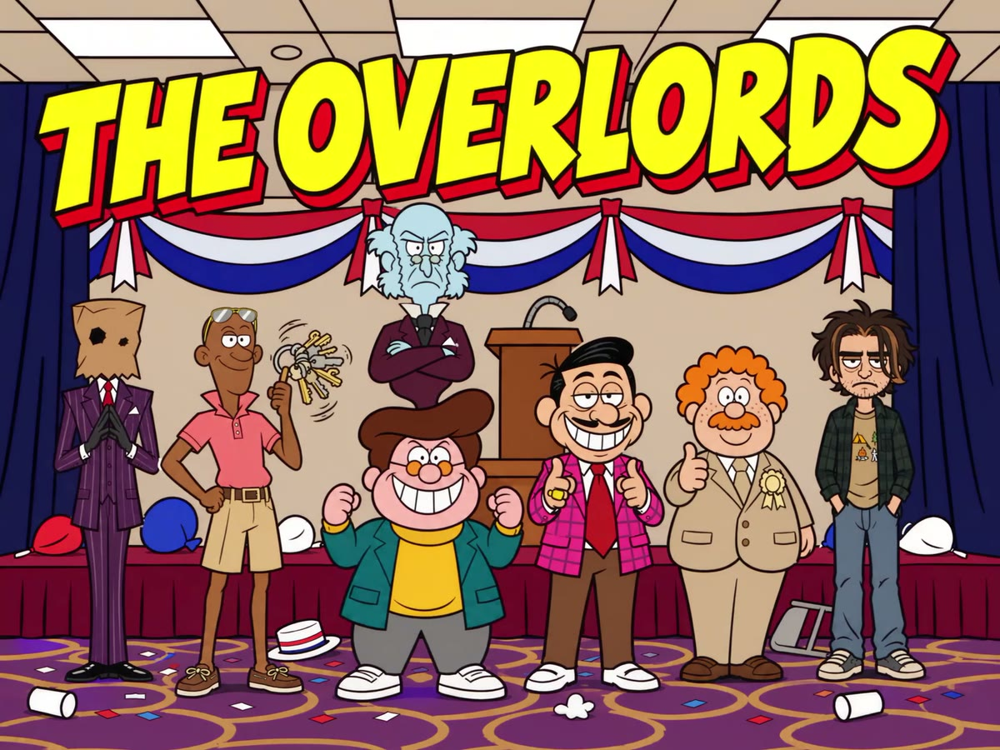

INDEPENDENT SOFTWARE & INTERACTIVE EXPERIENCES
Good ideas deserve
to be built well.
Matt Jones, LLC builds original digital experiences, from the toons and games of Flash Is Dead to the arcade at Cool Matt Games. We bring curiosity to what we make and care to how it works.
Explore Flash Is Dead
OUR WORK
A place to play.
A place to explore.
FLASH IS DEADThe internet used to be fun.
Let’s bring that back.
Original toons and browser games, made with the spirit of the old web. Meet The Overlords, explore the arcade, and find something worth coming back for. No plugin, no ads, no sign-up, no feed.
Visit Flash Is Dead

Watch The Overlords · The pilot
COOL MATT GAMESOriginal games.
Made for the browser.
Small, distinctive games you can open and play. Cool Matt Games is our home for finished releases—from the one-button timing of Corner Shot to the evolving world of SHAPES.
Visit Cool Matt Games IN DEVELOPMENT
Room for the unexpected.
Our experimental arcade is being developed for coolmattgames.io: a place to try new games, different visual worlds, and new ways of building for the web. Ideas can change here before they earn a place in the main arcade.
OUR APPROACH
Curiosity starts the work.
Care carries it through.
We believe useful software and memorable play share something important: respect for the person on the other side of the screen. We start with a clear idea, build something tangible, and keep improving it.
Experimentation has its own space. Finished experiences have theirs. That distinction gives us room to try something new while keeping our public releases focused.
LEADERSHIP
The person behind the work.
MJMatt Jones
Founder & CEO